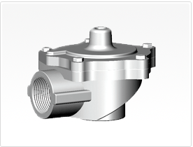
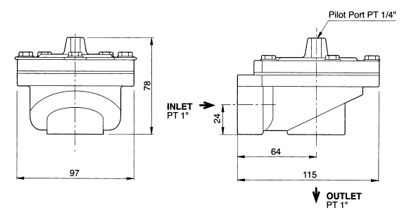
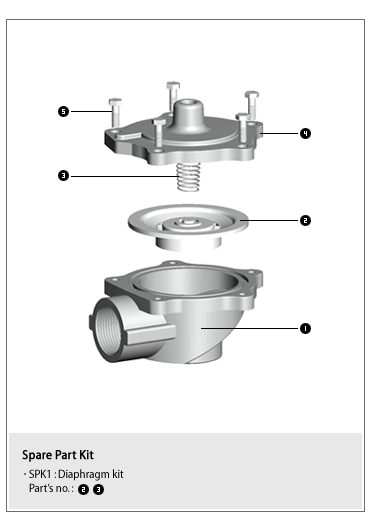
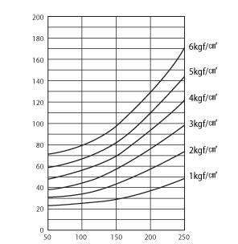

집진기 부품 / 펄스밸브 / 25시리즈 / TH-5825-B
TH-5825-B SINGLE, REMOTE, SCREW · Pulse Valve 1"

| 작동 Operation | Normally Closed |
|---|---|
| 배관 크기 Pipe Size (Inlet & Outlet) | PT 1” |
| Cv 유량계수 Cv Flow Factor | 18.7 |
| 밸브 본체 Valve Body | Die-cast Aluminum |
| 사용 유체 Media | Air or Inlet Gas |
| 유체 온도 Fluid Temperature | 110 ℃ Max |
| 주위 온도 Ambient Temperature | 100 ℃ Max |
| 파일럿 Pilot Air | Single |
| 연결 방식 Mounting | Screw Type |
| 다이어프램 Diaphragm Sheet | Elastomer |
| 설계 압력 Design Pressure | 10.5 kgf/㎠ |
| 최대 사용 압력 Max. Operating Pressure | 7.5 kgf/㎠ |
| 중량 Approx. Weight | 460g |
- 본 카탈로그의 사양 및 치수는 품질 향상을 위해 사전 예고 없이 변경될 수 있습니다.
- 극저압 환경(최소 0.2 kgf/㎠) 적용 시 저압 패키지 옵션을 선택할 수 있습니다.
- 고온 환경(최대 198℃) 적용 시 바이톤(Viton) 패키지 옵션을 선택할 수 있습니다.
외형 치수도 Dimension

부품 구성 Part LayOut

- Body
- Main Diaphragm (PA01-25)
- Main Spring (PM50-25)
- Cover
- Hex Bolt
공기 소모량 Air Consumption

주문 방법 Ordering Information
TH-5825-B □
□ : 입구·출구·파일럿 포트 나사 규격
N : NPT · G : G-Parallel · B : BSP Taper
견적·규격 문의 051-319-2332 · daehatw@daum.net